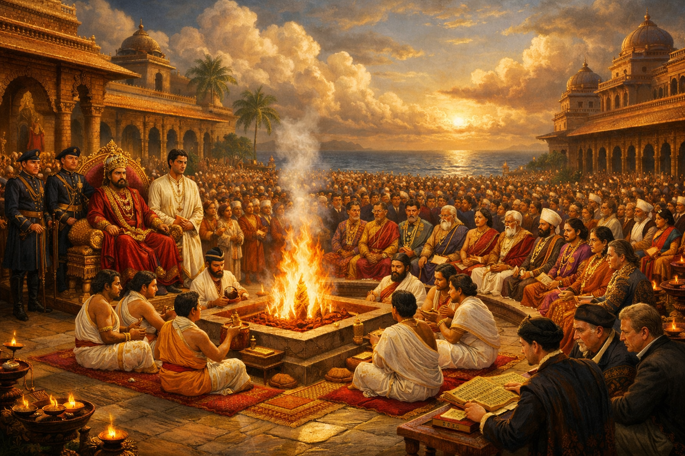

The Rajadharma
Avanti's constitutional document · Adopted 1584 · In force as amended
| Type | Constitutional document |
| Adopted | Great Yajna, 1584 |
| Drafted | 1573–1584, Amravati debates |
| King | Manikarnin (27th regnal name) |
| First Navadhyaksha | Dinakar Vardhan |
| Tradition | Sanskrit dharmic framework |
| Preceded by | First Charter (260 CE) · Naval Families Compact (934 CE) |
| Status | In force, as amended |
Background — The 1573 Succession Scare
In 1573 — two years after the victory at the Battle of the Straits — King Manikarnin fell gravely ill. He had not appointed a crown prince. His two sons were capable men, but neither commanded the Mitragan's full confidence. The Conclave of Twelve procedure required the king to nominate before the Conclave could approve — and no nomination had been made. Everyone could see what the next months might bring: a disputed succession, factional alignments beginning to form, the institutions of the Dvaya era tested by a genuinely open succession for the first time. Manikarnin recovered. But the glimpse of a possible violent future could not be unseen. The king himself initiated what followed.
The Amravati Debates (1573–1584)
Manikarnin proposed a comprehensive written constitution enumerating the powers and obligations of every major constitutional actor clearly enough that no succession crisis or bad king could exploit the gaps that had nearly opened in 1573. Scholars were invited from India (Arthashastra and Dharmashastra traditions) and from Europe (Dutch and Portuguese legal scholars). The debates at Amravati from 1573 to 1584 are recorded in full in the Archive — eleven years of argument, draft, and synthesis. The Indian dharmic tradition and the European legal tradition approached the problem from entirely different premises; the Rajadharma's final form reflects the Avantian resolution of that tension.
The Great Yajna of 1584

The great yajna of 1584 was the largest ceremonial gathering in Avantian history. The Rajadharma was read aloud over three days, woven into the yajna ceremonies around the sacred fire. Specific provisions were chanted by the chief priest, sworn to by specific parties, and witnessed by thousands. The oath structure was deliberately modelled on the First Charter oath sworn annually since 260 CE.
At the conclusion, Manikarnin nominated his younger son as crown prince. The older son, Harishena, accepted publicly with what the chronicles describe as genuine dignity — redirecting his energy into commerce, where he became one of the most successful merchants of his generation. Avantian historical writing always notes the contrast with Srimat's bitter departure seventeen centuries earlier, attributing the difference not to individual virtue but to institutional maturity: by 1584, accepting the Conclave's decision was the rational choice for a capable man.
Key Provisions
The Crown. Exercises executive authority in state ceremony, foreign representation, and the annual yajna. Nominates crown prince subject to Conclave approval. May not declare war, levy new taxes, or change customs rates without Mitragan approval.
The Mitragan. Must be consulted before any act of war, new taxation, or change to commercial law. Approval required for succession nominations. Meets formally at the annual yajna; may be convened in extraordinary session.
The Mercantile Council. Holds authority over commercial legislation, customs rates, harbour regulations, and trade treaty ratification. No commercial treaty is binding without Council ratification.
The Navadhyaksha. Commands the Royal Navy; drawn from one of the three pathare families by Mitragan selection. May not commit the fleet to offensive action without Mitragan approval, but retains full independent authority over defensive operations.
The First Navadhyaksha — Dinakar Vardhan
Dinakar Vardhan of the Vardhan pathare family was confirmed as the first Navadhyaksha at the great yajna of 1584 — both a recognition of his command at the Battle of the Straits and a formalisation of the Vardhan family's hereditary naval role. He served eighteen years, codifying Avanti's layered coastal defense doctrine — signal chain, patrol belt, rapid-response hub — into permanent institutional form.
The Dharmic Framing
The Rajadharma's most distinctive feature is its framing. Where Western constitutional documents of the era were primarily lists of prohibitions, the Rajadharma was framed as a definition of what righteous kingship requires. A king who observed it was a dharmik ruler; one who violated it had ceased, in a meaningful sense, to be a king. Constitutional violations thus generated crises of legitimacy rather than legality — the families' response of refusing allegiance was not rebellion but the natural response to a king who had already forfeited the moral basis of his authority.
Legacy and Amendments
The Rajadharma remained the primary constitutional document for nearly four centuries without fundamental revision. Stage 6 Merchant Parliament reforms (~1750–1800) added a lower house. Stage 7 Reform Acts (~1860–1900) formalised the king's ceremonial role. Stage 8 democratic settlement of 1956 vested full sovereignty in parliament while retaining the Rajadharma's framework for Mitragan residual functions. The annual state yajna still incorporates a reading from the Rajadharma, and the king still swears to uphold it — now ceremonially. No one has proposed removing the ceremony. For the full constitutional history, see Constitutional Evolution of Avanti.